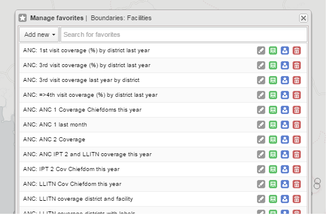

Favorite maps
|  |
Saving your maps as favorites makes it easy to restore them later. It also gives you the opportunity to share them with other users as an interpretation or put it on the dashboard. You can save all types of layers as a favorite. A favorite always opens with the default background map.
When you have created a map it is convenient to save it as a favorite:
Click Favorites.
The Manage favorites dialog box opens.
Click Add new.
The Create new favorite dialog box opens.
In the text field, type the name you want to give your pivot table.
Click Create.
Your favorite is added to the list.
Click Favorites.
The Manage favorites dialog box opens.
Find the favorite you want to open. You can either use Prev and Next or the search field to find a saved favorite. The list is filtered on every character that you enter.
Click the name.
Click Favorites.
The Manage favorites dialog box opens.
Find the favorite you want to rename.
You can either use Prev and Next or the search field to find a saved favorite.
Click the grey rename icon next to the favorite's name.
The Rename favorite dialog box favorite opens.
Type the new name and click Update.
To save the current map to an existing favorite (overwrite):
Click Favorites.
The Manage favorites dialog box opens.
Find the favorite you want to overwrite.
You can either use Prev and Next or the search field to find a saved favorite.
Click the green overwrite icon next to the favorite's name.
Click OK to confirm that you want to overwrite the favorite.
For certain analysis-related resources in DHIS2, you can share a data interpretation. An interpretation is a link to the relevant resource together with a text expressing some insight about the data.
To create an interpretation of a map and share it with all users of the system:
Open or create a favorite map.
Click Share > Write interpretation.
The Write interpretation dialog box opens.
In the text field, type a comment, question or interpretation.
Click Share.
The dialog box closes automatically. You can see the interpretation on the Dashboard.
After you have created a map and saved it as a favorite, you can share the favorite with everyone or a user group. To modify the sharing settings:
Click Favorites.
Find the favorite you want to share.
You can either use Prev and Next or the search field to find a saved favorite.
Click the blue share icon next to the favorite's name.
In the text box, enter the name of the user group you want to share your favorite with and click the + icon.
The chosen user group is added to the list of recipients.
Repeat the step to add more user groups.
If you want to allow external access, select the corresponding box.
For each user group, choose an access setting. The options are:
None
Can view
Can edit and view
Click Save.
Click Favorites.
The Manage favorites dialog box opens.
Find the favorite you want to delete.
You can either use Prev and Next or the search field to find a saved favorite.
Click the red delete icon next to the favorite's name.
Click OK to confirm that you want to delete the favorite.